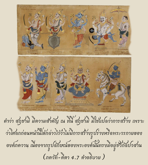

เมื่อใดและที่ไหนที่การปฏิบัติตามหลักศาสนา (ธรรมะ) เสื่อมลง โอ้ ผู้สืบราชวงศ์ ภรต และการปฏิบัติที่ผิดหลักศาสนา (อธรรม) มีอำนาจเหนือ ในขณะนั้นตัวข้าจะเสด็จลงมา

คำว่า สฺฤชามิ มีความสำคัญ ณ ที่นี้ สฺฤชามิ ไม่ได้แปลว่าการสร้าง เพราะว่าโศลกก่อนหน้านี้ได้กล่าวไว้ว่าไม่มีการสร้างรูปร่าง หรือพระวรกายขององค์ภควานฺ เนื่องจากรูปลักษณ์ของพระองค์นั้นทรงมีอยู่ชั่วกัลปวสาน ฉะนั้น คำว่า สฺฤชามิ หมายความว่า องค์ภควานฺทรงปรากฏมาตามความเป็นจริงแม้จะทรงปรากฏตามกำหนดเวลา เช่น ในปลาย ทฺวาปร-ยุค ของกัปที่ยี่สิบแปดแห่ง มนุ-สํหิตา องค์ที่เจ็ดในหนึ่งวันของพระพรหม พระองค์ทรงไม่มีพันธกรณีที่จะต้องปฏิบัติตามกฎเกณฑ์เหล่านี้ เพราะทรงมีอิสระเสรีอย่างสมบูรณ์ในการปฏิบัติ อย่างไรก็ได้ตามพระราชอัธยาศัย ฉะนั้น ทรงปรากฏด้วยความปรารถนาของพระองค์เอง เมื่ออธรรมเฟื่องฟูมีอำนาจเหนือ และศาสนาที่แท้จริงสูญหายไป หลักธรรมแห่งศาสนานี้ได้วางไว้ในคัมภีร์พระเวท การปฏิบัติใดๆ ที่ขัดแย้งต่อกฎเกณฑ์อันถูกต้องของคัมภีร์พระเวทจะทำให้เราเป็นผู้ไร้คุณธรรม ใน ภาควต ได้กล่าวไว้ว่าหลักธรรมนี้ คือ กฎขององค์ภควานฺ พระองค์เท่านั้นที่ทรงสามารถสร้างระบบศาสนา เป็นที่ยอมรับกันว่าองค์ภควานฺทรงเป็นผู้ตรัสคัมภีร์พระเวทเข้าสู่หัวใจของพระพรหม ฉะนั้น หลัก ธรฺม หรือหลักศาสนา คือ คำสั่งโดยตรงของบุคลิกภาพสูงสุดแห่งพระเจ้า (ธรฺมํ ตุ สากฺษาทฺ ภควตฺ-ปฺรณีตมฺ) หลักธรรมต่างๆ ได้กล่าวไว้อย่างชัดเจนตลอดทั้งเล่มใน ภควัท-คีตา จุดมุ่งหมายของคัมภีร์พระเวท คือ สถาปนาหลักธรรมเช่นนี้ภายใต้คำสั่งขององค์ภควานฺ และพระองค์ทรงสั่งโดยตรงในตอนท้ายของ คีตา ว่าหลักธรรมสูงสุดของศาสนา คือ การศิโรราบต่อองค์ภควานฺเท่านั้น ไม่มีอะไรมากไปกว่านี้ หลักธรรมของพระเวทจะส่งเสริมเราไปสู่การศิโรราบอย่างสมบูรณ์ต่อพระองค์ และเมื่อใดที่มีมารมารังควานหลักธรรมนี้ องค์ภควานฺจะทรงปรากฏ จาก ภาควต เราเข้าใจว่าองค์กฺฤษฺณทรงอวตารลงมาเป็นองค์พุทฺธ (พระพุทธเจ้า) ขณะที่ลัทธิวัตถุนิยมแพร่หลาย และนักวัตถุนิยมได้ใช้ข้ออ้างจากอำนาจแห่งคัมภีร์พระเวท ถึงแม้ว่าจะมีกฎเกณฑ์ข้อบังคับเกี่ยวกับการบูชายัญสัตว์เพื่อจุดมุ่งหมายบางประการในคัมภีร์พระเวท แต่ผู้มีแนวโน้มไปในทางมารก็ยังทำการบูชายัญสัตว์โดยไม่มีการอ้างอิงถึงหลักธรรมของพระเวท องค์พุทฺธ (พระพุทธเจ้า) ทรงประสูติเพื่อหยุดความเหลวไหลเช่นนี้ และทรงสถาปนาหลักอหิงสาแห่งพระเวท ดังนั้น ทุกๆ อวตาร หรืออวตารขององค์ภควานฺจะทรงมีพระภารกิจโดยเฉพาะ และทั้งหมดได้อธิบายไว้ในพระคัมภีร์อย่างเปิดเผย เราไม่ควรยอมรับผู้ใดว่าเป็นอวตารนอกจากพระคัมภีร์ ได้อ้างอิงไว้ไม่เป็นความจริงที่ว่าองค์ภควานฺทรงปรากฏบนแผ่นดินของประเทศอินเดียเท่านั้น พระองค์ทรงสามารถปรากฏพระวรกายได้ทุกหนทุกแห่งตามที่ทรงปรารถนา องค์ภควานฺในรูปของอวตารทุกพระองค์จะตรัสเกี่ยวกับศาสนามากเท่าที่ประชาชนในยุค และสถานการณ์นั้นๆ จะเข้าใจได้ แต่พระภารกิจของทุกพระองค์ทรงเหมือนกัน คือ ทรงนำประชาชนมาสู่ ภควานฺ จิตสำนึก และเชื่อฟังปฏิบัติตามหลักธรรมแห่งศาสนา บางครั้งพระองค์เสด็จลงมาเอง บางครั้งทรงส่งผู้แทนที่เชื่อถือได้มาในรูปของสาวก หรือผู้รับใช้ หรือทรงแปลงพระวรกายมา
หลักธรรมแห่ง ภควัท-คีตา ได้ตรัสแก่ อรฺชุน ด้วยเหตุนี้จึงเป็นการตรัสแก่บุคคลอื่นๆ ที่เจริญแล้ว เนื่องจาก อรฺชุน ทรงมีความเจริญก้าวหน้ามากเมื่อเปรียบเทียบกับคนธรรมดาทั่วไป ในส่วนอื่นๆ ของโลกสองบวกสองเป็นสี่ คือหลักคณิตศาสตร์ที่เป็นความจริง ไม่ว่าในชั้นคณิตศาสตร์เบื้องต้นหรือชั้นสูง ถึงกระนั้น ก็ยังมีการคำนวณที่สูงกว่าและต่ำกว่า ดังนั้น อวตารทั้งหมดขององค์ภควานฺจะสอนหลักธรรมเดียวกัน แต่จะปรากฏว่าสูงกว่าหรือต่ำกว่าขึ้นอยู่กับแต่ละสถานการณ์ที่แตกต่างกันไป หลักศาสนาที่สูงกว่าเริ่มจากการยอมรับสี่ระดับ และสี่อาชีพแห่งชีวิตสังคม ดังจะอธิบายต่อไป จุดมุ่งหมายทั้งหมดแห่งพระภารกิจขององค์อวตาร คือ การรณรงค์กฺฤษฺณจิตสำนึกทั่วทุกหนทุกแห่ง จิตสำนึกเช่นนี้ปรากฏหรือไม่ปรากฏจะอยู่ภายใต้สถานการณ์ที่แตกต่างกันเท่านั้น